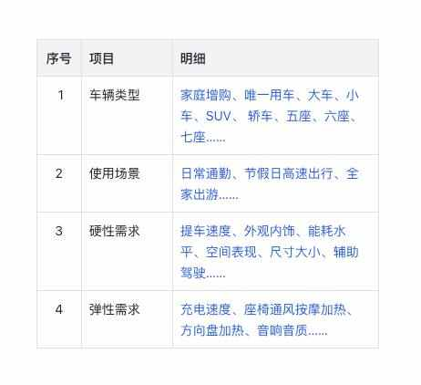
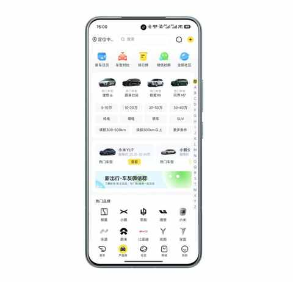
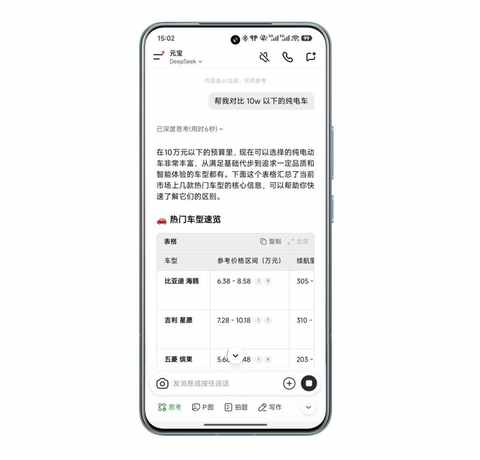
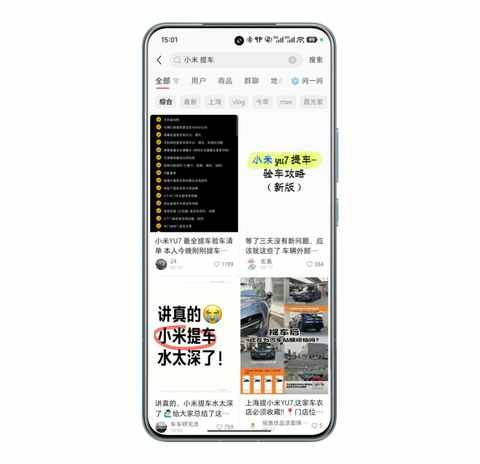

车型太多，普通人怎么选新能源车？分享一个更符合普通人的选车方法！
一、引子
由于近半年一直在不间断的分享选车感受和用车体验，所以不时会有亲戚朋友来询问购车方便的各种问题。
针对他们的问题能回答的部分，都有做解答同步还会推荐挺多的车型，但越来越发现我起到的反作用可能更多，因为我总想让他们也用我的方式方法来选车。
最近才猛然发现，我的选车方法只适合小部分人，大部分普通人没有那么多空闲去看各种自媒体博主的测评，也很难看懂车的诸多参数，更没那么多 精力和时间去多多试驾和体验。
于我而言，放下助人情结那是不可能的，我可以改！我要学习并优化助人的方式与方法，从而帮到更多的朋友们！

我能调整助人的方法，希望能帮助到身边的朋友和亲戚们，让他们都能高效地选到自己满意的新能源车。
二、普通人选车 的方法
1️⃣ 三件事， 一定要做
① 梳理用车需求
需求梳理是极其重要的环节，一定要重视！
用车需求直接关系到购车预算！
下面的表格中，大致列举了四个方向，能让梳理需求的开启过程变得简单。

建议找个时间拿纸和笔和家人一起讨论，能在短时间里面快速梳理出来一个关于用车需求的明细单。
② 敲定购车预算
在需求比较明确的前提下，购车预算也能敲定在一个范围内。
在某一个范围里面做选择好比钓鱼前先打窝，窝打的好是钓鱼满载而归的前提。
③ 预估用车费用
提前了解保险费用和保养细则，再结合每年的行驶里程，能初步预估出来每年的用车成本是是多少。
2️⃣ 三步走， 高效筛选
现在每个月都有不少新车发布，普通人面对海量的信息，得有一个高效的筛选方式，让你在短时间选好几款车去集中试驾。
① 第一步：看外观与内饰
通过外观和内饰， 能排除掉一些没有眼缘的车，看照片、看视频、线下实地看都行，把不入眼的和虽然销量好但喜欢不起来的统统都淘汰掉。
通过外观和内饰的初步筛选，能最大程度上规避在后悔的可能，更能在你每次开车的时候给到你额外的情绪价值，每次开车都能有一个好心情。
② 第二步：实地看车
现在逛商场的同时也能看到超多的新能源车，而且都能坐进去细细体验，把前排、后排、主驾、副驾、前备箱、后备箱都看看摸摸，空间和做工等细节必须实际去感受才行！
操作操作车机看看流畅度如何，试试语音唤醒功能看能否执行常见的指令和任务，用音响播放自己喜欢歌手的歌听听看音质是否符合预期。
③ 第三步：多多试驾
可在门店试驾，也能直接和销售预约上门试驾，车子直接开到家门口。
关于试驾的 4 个实用 tips：
- 1）多多益善，建立感受需要一定时间
- 2）如路线能自定义，走常路过的路线，感知相对更准确
- 3）做好时间规划，可在工作日把多款车的试驾都安排好
- 4）请先试乘后试驾，后排的感受也很重要
试驾是关系到最终选择的关键环节，试驾的时候把参与决策的家庭成员都带上，一起来细细体验。
毕竟车是大件消费品，也来越来不只是一个从 A 点到 B 点的交通工具，车在看起来、坐起来和开起来都能给人很不一样的感受。
3️⃣ 三个APP，助力决策
用好下面这三个 APP 能有效提高决策的效率和准确度。
① 新出行
检索市面上的车型，查看各种高清大图

② 腾讯元宝
填补信差，用 Ai 对比和解析各种参数细节

③ 小红书
查询各种攻略，查看真实车主的用车分享

三、结语
这个时代的每个人都需要情绪价值，而新能源车无疑是一个能提供情绪价值的大件商品。现在的新能源车也在越来越多的扮演除了工具属性之外的空间属性，有不少新能源车主早就养成了在车里面午睡的习惯……
选择多，某种意义上是幸福的烦恼，但和我一样投入真金白银购车的普通人最怕的是踩坑是后悔当初的选择。
对于我们普通人来说，在预算范围内选择一款契合自身需求的同时又能偶尔提供点情绪价值的新能源车并不是一件容易做到的事情。
这是一件不容易而正确的事情，值得你投入一下时间和精力，相信在你最终提车的时候、每天开车的时候、偶尔长途出行的时候你都会感谢当初的自己，感谢自己做了一个好的决策！